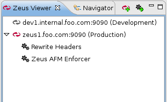
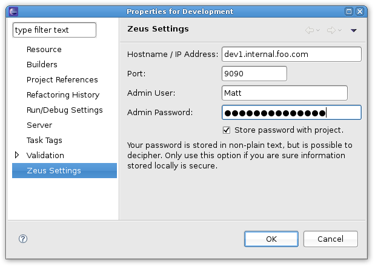

All your Zeus projects are displayed in the Zeus Viewer pane. Each connection is identified by the hostname and port (the name you gave to the connection when it was created is shown in brackets). You cannot create more than one connection to a traffic manager.
If you wish to disconnect from a traffic manager, right-click on it and choose 'Disconnect (Close Project)'. This will simply close the connection, yet retain the local Eclipse project files associated with it. Disconnecting a project frees up local memory and resources, and stops the plug-in polling the remote admin server. Disconnected projects are still shown in the Zeus Viewer, but are distinguished by a greyed-out icon next to the name and no available rules. You can also easily reconnect to a closed Zeus project by right-clicking on it and selecting 'Reconnect (Open Project)'.
Fig.1: 'Development' is now disconnected
If you wish to remove a Zeus project altogether, you can right-click on it and choose 'Remove Project'. This will not affect any resources on the remote traffic manager.
Individual Zeus project settings can be modified by right-clicking on the entry in the viewer and choosing 'Edit Settings'. You can review and modify various properties for this project. Specifically, Zeus connection and authentication settings are available by clicking the Zeus link on the left hand pane. Here you can modify the hostname, port, admin user and admin password stored with the project.
Fig.2: The Project Settings dialog